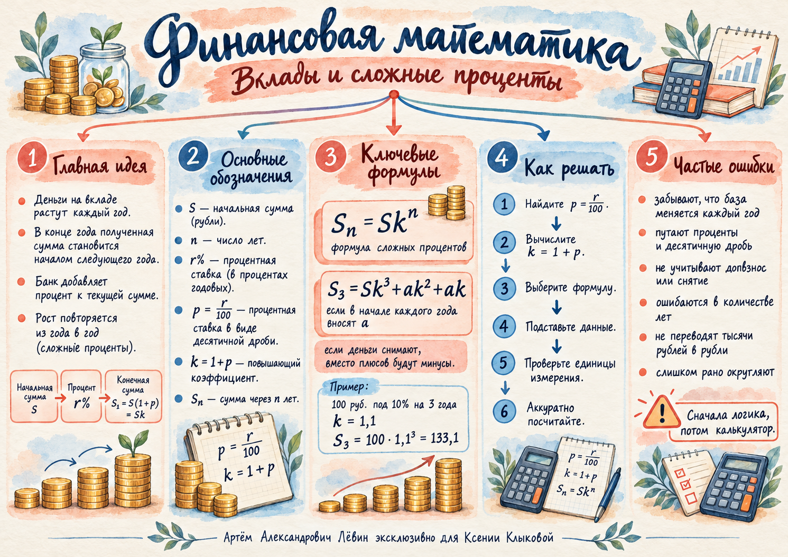

01 / Основа Откуда берётся сложный процент
Проценты начисляются на всю сумму, уже находящуюся на вкладе. Проценты за предыдущий год остаются на счёте и сами участвуют в следующем начислении.
| Год | Начальная сумма | Начислено | Конечная сумма |
|---|---|---|---|
| 1 | 100 | 10 | 110 |
| 2 | 110 | 11 | 121 |
| 3 | 121 | 12,1 | 133,1 |
Каждый год предыдущая конечная сумма становится новой начальной суммой. Например, проценты второго года считаются от 110 рублей, третьего — от 121 рубля.
02 / Закон Коэффициент роста и степень
Обозначим S — первоначальную сумму, r % — годовую ставку, p = r / 100 — долю ставки и k = 1 + p — повышающий коэффициент.
Первый год даёт Sk, второй — Sk2, третий — Sk3. Показатель степени равен количеству начислений, если ставка постоянна и нет пополнений и снятий.
При 20 % годовых k = 1,2. Вклад 200 рублей за три года вырастет до 200 · 1,23 = 345,6 рубля.
Условие применения: проценты начисляются один раз в конце каждого года; ставка в течение рассматриваемого срока не меняется.
03 / Операции Пополнения в начале года
Если в начале второго и третьего годов вносят по a рублей, каждое пополнение попадает на счёт до годового начисления. Поэтому взнос второго года проходит два начисления, а взнос третьего — одно.
| Год | Пополнение | База начисления | Процент | Итог |
|---|---|---|---|---|
| 1 | 0 | 120 | 18 | 138 |
| 2 | 10 | 148 | 22,2 | 170,2 |
| 3 | 10 | 180,2 | 27,03 | 207,23 |
В формуле получаем 120 · 1,153 + 10 · 1,152 + 10 · 1,15 = 207,23 млн руб.
04 / Баланс Снятия и разные операции
Снятие уменьшает накопленную сумму: перед соответствующим вкладом в будущем балансе появляется знак минус. Для трёх лет с одинаковым снятием a в начале второго и третьего годов:
Пример: вклад 100 тыс. руб. под 10 % на четыре года, в начале второго, третьего и четвёртого годов снимают по 5 тыс. руб.:
100 · 1,14 − 5(1,13 + 1,12 + 1,1) = 128,205 тыс. руб. То есть 128 205 руб.
Если операции разные
Пусть B0 = S, а ct — величина операции в начале года t: положительная при пополнении и отрицательная при снятии. Тогда:
При начальных 200 тыс. руб., 10 %, пополнении на 20 тыс. руб. во втором году и снятии 10 тыс. руб. в третьем итог равен 279,4 тыс. руб.
05 / Обратная задача Найти сумму или ставку
Переносим вклад пополнений в другую часть равенства и делим на коэффициент kn.
При результате 173,28 тыс. руб., трёх годах, 20 % и двух пополнениях по 10 тыс. руб. исходный вклад равен 85 тыс. руб.
Если вклад не пополнялся, из Sn = Skn находим kn, затем положительный k и процент.
500k3 = 665,5 ⇒ k = 1,1 ⇒ 10 %.
Проверьте денежные единицы: 128,205 тысячи рублей — это 128 205 рублей. Результат округляйте только после вычисления.
06 / Самопроверка Что важно не перепутать
07 / Путь А Самостоятельная тренировка
Во всех десяти заданиях ставка постоянна, начисление годовое и происходит в конце года. Взносы и снятия выполняются в начале указанного года.
- 1000 руб. под 10 % годовых. Сумма через один год?
- 80 тыс. руб. под 5 % на два года без операций. Ответ в тысячах рублей.
- 200 тыс. руб. под 20 % на три года. Ответ в тысячах рублей.
- 100 тыс. руб. под 10 % на три года; в начале второго и третьего годов пополняют на 10 тыс. руб. Ответ в тысячах рублей.
- 100 тыс. руб. под 10 % на три года; в начале второго и третьего годов снимают по 5 тыс. руб. Ответ в тысячах рублей.
- 50 тыс. руб. под 20 % на четыре года; в начале второго, третьего и четвёртого годов добавляют по 5 тыс. руб. Ответ в тысячах рублей.
- Вклад на три года под 10 %, в начале второго и третьего годов добавляют по 5 тыс. руб. Итог — 118,03 тыс. руб. Найдите первоначальную сумму.
- 300 тыс. руб. за три года без операций выросли до 399,3 тыс. руб. Найдите ставку.
- 50 тыс. руб. под 20 % на три года; два одинаковых пополнения в начале второго и третьего годов привели к 118,08 тыс. руб. Найдите величину одного взноса.
- 200 тыс. руб. под 10 % на три года; в начале второго года добавили 20 тыс. руб., в начале третьего сняли 10 тыс. руб. Ответ в рублях.
Открыть ответы для самопроверки
08 / Материалы Памятка к занятию

